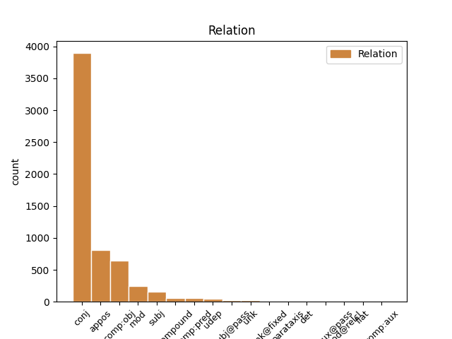
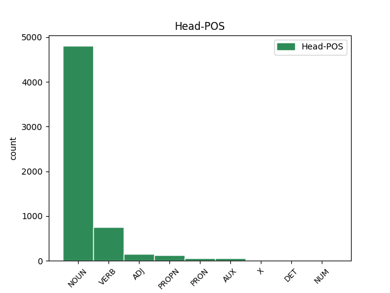
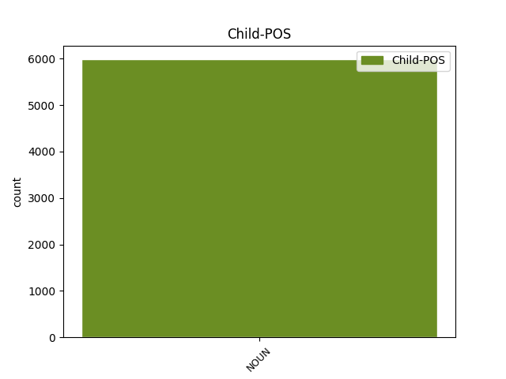

Distribution of features within this leaf



Agreement Rules sorted by frequency.
When the dependent token is None
1 Esta _ _ _ _ 0 _ _ _
2 teoría _ _ _ _ 0 _ _ _
3 se _ _ _ _ 0 _ _ _
4 avenía _ _ _ _ 0 _ _ _
5 bien _ _ _ _ 0 _ _ _
6 con _ _ _ _ 0 _ _ _
7 la _ _ _ _ 0 _ _ _
8 creencia _ _ _ _ 0 _ _ _
9 de _ _ _ _ 0 _ _ _
10 el _ _ _ _ 0 _ _ _
11 Romanticismo _ _ _ _ 0 _ _ _
12 en _ _ _ _ 0 _ _ _
13 un _ _ _ _ 0 _ _ _
14 volkgeist _ _ _ _ 0 _ _ _
15 , _ _ _ _ 0 _ _ _
16 " _ _ _ _ 0 _ _ _
17 genio genio NOUN _ Gender=Masc|Number=Sing 0 _ _ _
18 o _ _ _ _ 0 _ _ _
19 espíritu espíritu NOUN _ Gender=Masc|Number=Sing 17 conj _ _
20 de _ _ _ _ 0 _ _ _
21 el _ _ _ _ 0 _ _ _
22 pueblo _ _ _ _ 0 _ _ _
23 " _ _ _ _ 0 _ _ _
24 , _ _ _ _ 0 _ _ _
25 autor _ _ _ _ 0 _ _ _
26 colectivo _ _ _ _ 0 _ _ _
27 y _ _ _ _ 0 _ _ _
28 anónimo _ _ _ _ 0 _ _ _
29 de _ _ _ _ 0 _ _ _
30 una _ _ _ _ 0 _ _ _
31 poesía _ _ _ _ 0 _ _ _
32 nacional _ _ _ _ 0 _ _ _
33 . _ _ _ _ 0 _ _ _
Disagree Examples:
1 Producto _ _ _ _ 0 _ _ _
2 de _ _ _ _ 0 _ _ _
3 el _ _ _ _ 0 _ _ _
4 fin _ _ _ _ 0 _ _ _
5 de _ _ _ _ 0 _ _ _
6 el _ _ _ _ 0 _ _ _
7 imperio imperio NOUN _ Gender=Masc|Number=Sing 0 _ _ _
8 y _ _ _ _ 0 _ _ _
9 las _ _ _ _ 0 _ _ _
10 invasiones invasión NOUN _ Gender=Fem|Number=Plur 7 conj _ _
11 germanas _ _ _ _ 0 _ _ _
12 la _ _ _ _ 0 _ _ _
13 población _ _ _ _ 0 _ _ _
14 isleña _ _ _ _ 0 _ _ _
15 cayó _ _ _ _ 0 _ _ _
16 a _ _ _ _ 0 _ _ _
17 1 _ _ _ _ 0 _ _ _
18 millón _ _ _ _ 0 _ _ _
19 durante _ _ _ _ 0 _ _ _
20 el _ _ _ _ 0 _ _ _
21 período _ _ _ _ 0 _ _ _
22 sajón _ _ _ _ 0 _ _ _
23 , _ _ _ _ 0 _ _ _
24 permaneciendo _ _ _ _ 0 _ _ _
25 hasta _ _ _ _ 0 _ _ _
26 el _ _ _ _ 0 _ _ _
27 siglo _ _ _ _ 0 _ _ _
28 XI _ _ _ _ 0 _ _ _
29 cuando _ _ _ _ 0 _ _ _
30 volvió _ _ _ _ 0 _ _ _
31 a _ _ _ _ 0 _ _ _
32 aumentar _ _ _ _ 0 _ _ _
33 llegando _ _ _ _ 0 _ _ _
34 a _ _ _ _ 0 _ _ _
35 5 _ _ _ _ 0 _ _ _
36 a _ _ _ _ 0 _ _ _
37 7 _ _ _ _ 0 _ _ _
38 millones _ _ _ _ 0 _ _ _
39 en _ _ _ _ 0 _ _ _
40 el _ _ _ _ 0 _ _ _
41 siglo _ _ _ _ 0 _ _ _
42 XV _ _ _ _ 0 _ _ _
43 , _ _ _ _ 0 _ _ _
44 pero _ _ _ _ 0 _ _ _
45 tras _ _ _ _ 0 _ _ _
46 la _ _ _ _ 0 _ _ _
47 peste _ _ _ _ 0 _ _ _
48 negra _ _ _ _ 0 _ _ _
49 volvió _ _ _ _ 0 _ _ _
50 a _ _ _ _ 0 _ _ _
51 reducir _ _ _ _ 0 _ _ _
52 se _ _ _ _ 0 _ _ _
53 a _ _ _ _ 0 _ _ _
54 solo _ _ _ _ 0 _ _ _
55 2 _ _ _ _ 0 _ _ _
56 a _ _ _ _ 0 _ _ _
57 4 _ _ _ _ 0 _ _ _
58 millones _ _ _ _ 0 _ _ _
59 . _ _ _ _ 0 _ _ _
1 Ya _ _ _ _ 0 _ _ _
2 es _ _ _ _ 0 _ _ _
3 tiempo _ _ _ _ 0 _ _ _
4 de _ _ _ _ 0 _ _ _
5 identificar _ _ _ _ 0 _ _ _
6 y _ _ _ _ 0 _ _ _
7 condenar _ _ _ _ 0 _ _ _
8 a _ _ _ _ 0 _ _ _
9 estos _ _ _ _ 0 _ _ _
10 cómplices _ _ _ _ 0 _ _ _
11 de _ _ _ _ 0 _ _ _
12 los _ _ _ _ 0 _ _ _
13 crímenes _ _ _ _ 0 _ _ _
14 contra _ _ _ _ 0 _ _ _
15 la _ _ _ _ 0 _ _ _
16 humanidad _ _ _ _ 0 _ _ _
17 cometidos _ _ _ _ 0 _ _ _
18 en _ _ _ _ 0 _ _ _
19 Libia _ _ _ _ 0 _ _ _
20 por _ _ _ _ 0 _ _ _
21 las _ _ _ _ 0 _ _ _
22 élites élite NOUN _ Gender=Fem|Number=Plur 0 _ _ _
23 occidentales _ _ _ _ 0 _ _ _
24 y _ _ _ _ 0 _ _ _
25 sus _ _ _ _ 0 _ _ _
26 gobiernos gobierno NOUN _ Gender=Masc|Number=Plur 22 conj _ _
27 títeres _ _ _ _ 0 _ _ _
28 . _ _ _ _ 0 _ _ _
1 Por _ _ _ _ 0 _ _ _
2 orden _ _ _ _ 0 _ _ _
3 de _ _ _ _ 0 _ _ _
4 Felipe _ _ _ _ 0 _ _ _
5 V _ _ _ _ 0 _ _ _
6 , _ _ _ _ 0 _ _ _
7 proyectó _ _ _ _ 0 _ _ _
8 una _ _ _ _ 0 _ _ _
9 reforma reforma NOUN _ Gender=Fem|Number=Sing 0 _ _ _
10 y _ _ _ _ 0 _ _ _
11 amejoramiento amejoramiento NOUN _ Gender=Masc|Number=Sing 9 conj _ _
12 de _ _ _ _ 0 _ _ _
13 la _ _ _ _ 0 _ _ _
14 margen _ _ _ _ 0 _ _ _
15 izquierda _ _ _ _ 0 _ _ _
16 de _ _ _ _ 0 _ _ _
17 el _ _ _ _ 0 _ _ _
18 río _ _ _ _ 0 _ _ _
19 Manzanares _ _ _ _ 0 _ _ _
20 , _ _ _ _ 0 _ _ _
21 lindante _ _ _ _ 0 _ _ _
22 con _ _ _ _ 0 _ _ _
23 los _ _ _ _ 0 _ _ _
24 jardines _ _ _ _ 0 _ _ _
25 de _ _ _ _ 0 _ _ _
26 el _ _ _ _ 0 _ _ _
27 Alcázar _ _ _ _ 0 _ _ _
28 . _ _ _ _ 0 _ _ _
1 Tobias _ _ _ _ 0 _ _ _
2 Sammet _ _ _ _ 0 _ _ _
3 , _ _ _ _ 0 _ _ _
4 Nacido _ _ _ _ 0 _ _ _
5 el _ _ _ _ 0 _ _ _
6 21 _ _ _ _ 0 _ _ _
7 de _ _ _ _ 0 _ _ _
8 noviembre _ _ _ _ 0 _ _ _
9 de _ _ _ _ 0 _ _ _
10 1977 _ _ _ _ 0 _ _ _
11 en _ _ _ _ 0 _ _ _
12 Fulda _ _ _ _ 0 _ _ _
13 , _ _ _ _ 0 _ _ _
14 Alemania _ _ _ _ 0 _ _ _
15 es _ _ _ _ 0 _ _ _
16 el _ _ _ _ 0 _ _ _
17 vocalista _ _ _ _ 0 _ _ _
18 , _ _ _ _ 0 _ _ _
19 teclista _ _ _ _ 0 _ _ _
20 y _ _ _ _ 0 _ _ _
21 compositor _ _ _ _ 0 _ _ _
22 de _ _ _ _ 0 _ _ _
23 la _ _ _ _ 0 _ _ _
24 banda _ _ _ _ 0 _ _ _
25 de _ _ _ _ 0 _ _ _
26 Power _ _ _ _ 0 _ _ _
27 metal _ _ _ _ 0 _ _ _
28 Edguy _ _ _ _ 0 _ _ _
29 , _ _ _ _ 0 _ _ _
30 también _ _ _ _ 0 _ _ _
31 conocido _ _ _ _ 0 _ _ _
32 por _ _ _ _ 0 _ _ _
33 su _ _ _ _ 0 _ _ _
34 proyecto _ _ _ _ 0 _ _ _
35 de _ _ _ _ 0 _ _ _
36 opera opera VERB _ Gender=Fem|Number=Sing|VerbForm=Fin 0 _ _ _
37 metal metal NOUN _ Gender=Masc|Number=Sing 36 comp:obj _ _
38 que _ _ _ _ 0 _ _ _
39 realizó _ _ _ _ 0 _ _ _
40 con _ _ _ _ 0 _ _ _
41 Avantasia _ _ _ _ 0 _ _ _
42 el _ _ _ _ 0 _ _ _
43 cual _ _ _ _ 0 _ _ _
44 incluye _ _ _ _ 0 _ _ _
45 grandes _ _ _ _ 0 _ _ _
46 músicos _ _ _ _ 0 _ _ _
47 tales _ _ _ _ 0 _ _ _
48 como _ _ _ _ 0 _ _ _
49 Andre _ _ _ _ 0 _ _ _
50 Matos _ _ _ _ 0 _ _ _
51 , _ _ _ _ 0 _ _ _
52 Kai _ _ _ _ 0 _ _ _
53 Hansen _ _ _ _ 0 _ _ _
54 , _ _ _ _ 0 _ _ _
55 Michael _ _ _ _ 0 _ _ _
56 Kiske _ _ _ _ 0 _ _ _
57 , _ _ _ _ 0 _ _ _
58 Timo _ _ _ _ 0 _ _ _
59 Tolkki _ _ _ _ 0 _ _ _
60 , _ _ _ _ 0 _ _ _
61 Roy _ _ _ _ 0 _ _ _
62 Khan _ _ _ _ 0 _ _ _
63 y _ _ _ _ 0 _ _ _
64 Jorn _ _ _ _ 0 _ _ _
65 Lande _ _ _ _ 0 _ _ _
66 . _ _ _ _ 0 _ _ _
1 El _ _ _ _ 0 _ _ _
2 Banco _ _ _ _ 0 _ _ _
3 Central _ _ _ _ 0 _ _ _
4 Europeo _ _ _ _ 0 _ _ _
5 advirtió _ _ _ _ 0 _ _ _
6 este _ _ _ _ 0 _ _ _
7 martes _ _ _ _ 0 _ _ _
8 que _ _ _ _ 0 _ _ _
9 la _ _ _ _ 0 _ _ _
10 eurozona _ _ _ _ 0 _ _ _
11 necesita _ _ _ _ 0 _ _ _
12 no _ _ _ _ 0 _ _ _
13 sólo _ _ _ _ 0 _ _ _
14 normas norma NOUN _ Gender=Fem|Number=Plur 0 _ _ _
15 mucho _ _ _ _ 0 _ _ _
16 más _ _ _ _ 0 _ _ _
17 estrictas _ _ _ _ 0 _ _ _
18 sobre _ _ _ _ 0 _ _ _
19 el _ _ _ _ 0 _ _ _
20 endeudamiento _ _ _ _ 0 _ _ _
21 soberano _ _ _ _ 0 _ _ _
22 sino _ _ _ _ 0 _ _ _
23 mayores _ _ _ _ 0 _ _ _
24 controles control NOUN _ Gender=Masc|Number=Plur 14 conj _ _
25 en _ _ _ _ 0 _ _ _
26 el _ _ _ _ 0 _ _ _
27 endeudamiento _ _ _ _ 0 _ _ _
28 de _ _ _ _ 0 _ _ _
29 consumidores _ _ _ _ 0 _ _ _
30 y _ _ _ _ 0 _ _ _
31 empresas _ _ _ _ 0 _ _ _
32 . _ _ _ _ 0 _ _ _